In OBS: Browserquelle → „Lokale Datei“ → Loader-Datei (Knopf „Pfad kopieren“) → Breite / Höhe eintragen →
Strg+R. Für alle Seiten:
?zoom=1.5 größer (Breite / Höhe mitmultiplizieren, dann URL-Quelle statt Loader),
?debug=1 oder Taste H = dunkler Hintergrund zum Einrichten, ?demo=1 = Beispieldaten ohne iRacing (wo vorhanden).
Seiten blättern nur per Stream Deck: http://localhost:5001/nav/next · /prev · /first.
Linkes Symbol = Taste an, rechtes = aus.LIVE
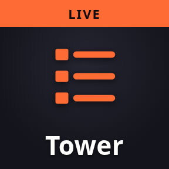
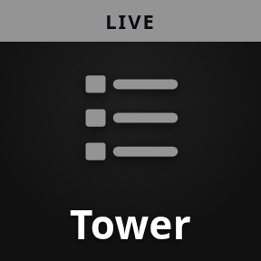
Tower
Standings
Adresse
OBS-Loader
standings.html Größe / Optionen
✓ 456 × 640 (22 Fahrer; +25 px je Fahrer). Große Felder: URL-Quelle
http://localhost:5005/?rows=25 = Top 24 + Auto der Kamera ≈ 456 × 720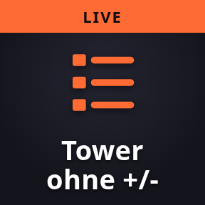
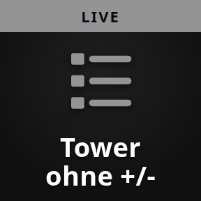
Tower ohne +/-
Standings (no +/-)
Adresse
OBS-Loader
standings_nodelta.html Größe / Optionen
≈ wie der normale Tower (456 breit; Zeitspalten breiter statt +/-). Mehrklassen:
?classrows=N = Top N je Klasse. Strafen aus 5019 (DT / SG / +5s / DSQ / INV): ?pen=0 aus, ?warn=1 mit Verwarnungen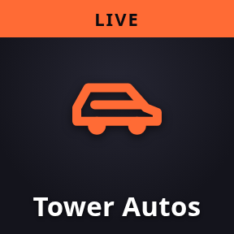
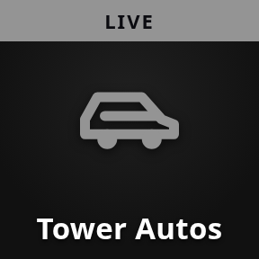
Tower Autos
Standings (Cars)
Adresse
OBS-Loader
standings_cars.html Größe / Optionen
≈ 498 × 640 (42 px breiter als der normale Tower;
?view= Blickwinkel)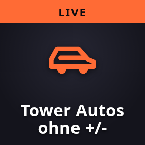
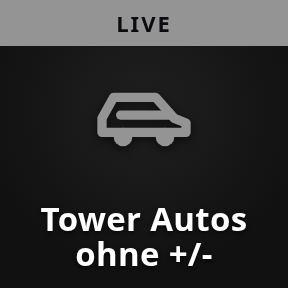
Tower Autos ohne +/-
Standings (Cars, no +/-)
Adresse
OBS-Loader
standings_cars_nodelta.html Größe / Optionen
≈ 498 × 640
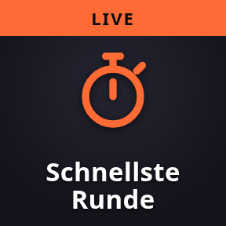
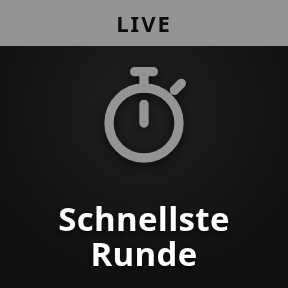
Schnellste Runde
Fastest Lap
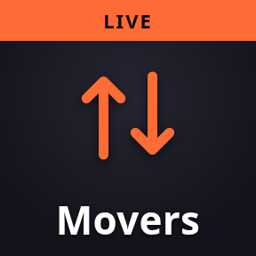
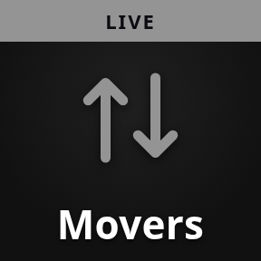
Movers
Biggest Movers
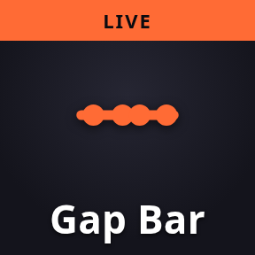
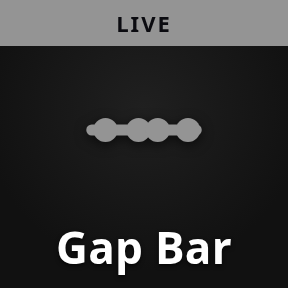
Gap Bar
Gap Bar
Adresse
OBS-Loader
gapbar.html Größe / Optionen
✓ frei wählbar × 135 (füllt die Breite)
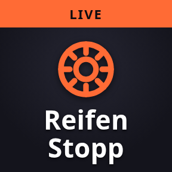
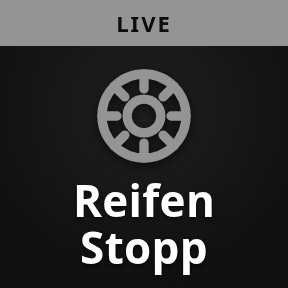
Reifen Stopp
Pit Stop Tires
Adresse
OBS-Loader
pittires.html Größe / Optionen
≈ 680 × 230 — Karte für ~15 s nach jedem Stopp (
?secs=); Daten aus der RaceLogger.exe der Fahrer, siehe REIFEN_LIVE.md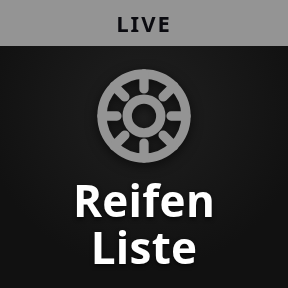
Reifen Liste
Pit Stops Tire List
Adresse
OBS-Loader
pittires_list.html Größe / Optionen
≈ 780 × 450 (12 Stopps,
?top=)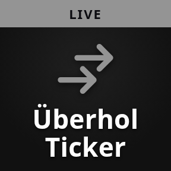
Überhol Ticker
Overtake Ticker
Kommentar
Commentary (REGIE)
Adresse
OBS-Loader
commentary.html Größe / Optionen
≈ 1130 × 110 (zwei Zeilen;
?width= ändert die Breite)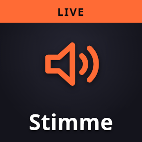
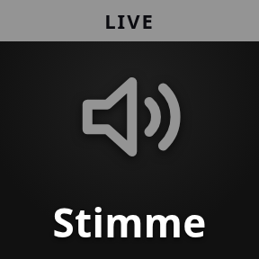
Stimme
Commentary Voice (REGIE)
Adresse
OBS-Loader
commentary_voice.html Größe / Optionen
unsichtbar, nur Ton — in OBS „Audio über OBS steuern“ anhaken (beliebige Größe, z. B. 400 × 100)
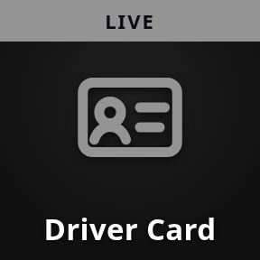
Driver Card
Driver Card
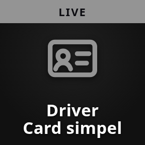
Driver Card simpel
Driver Card (no iRating / SR)
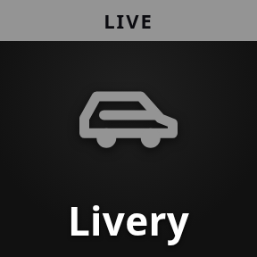
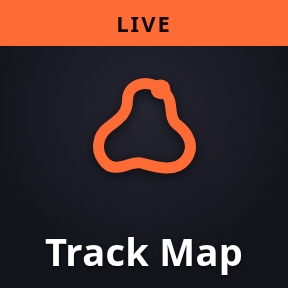
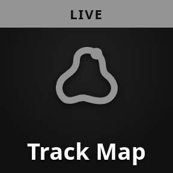
Track Map
Track Map
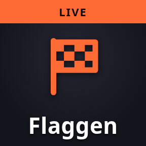
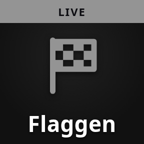
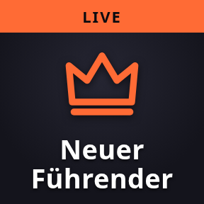
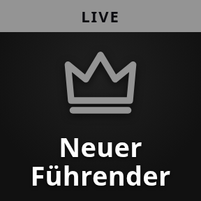
Neuer Führender
New Race Leader
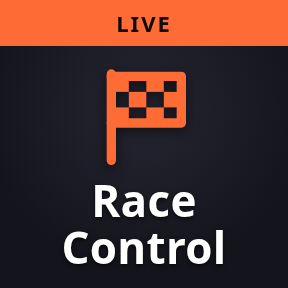
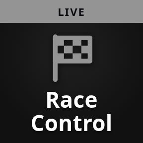
Race Control
Race Control
Adresse
OBS-Loader
rc_banner.html Größe / Optionen
≈ 950 × 120 (siehe RACE_CONTROL.md)
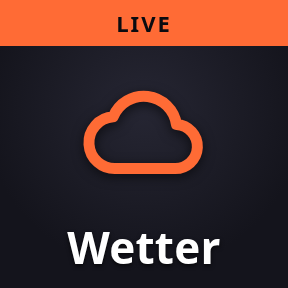
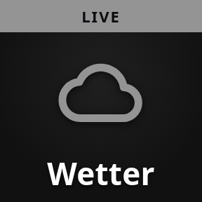
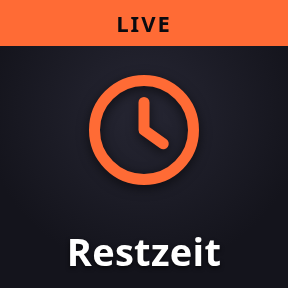
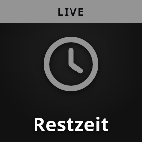
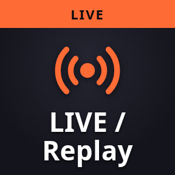
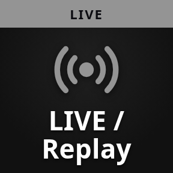
LIVE / Replay
Live Indicator
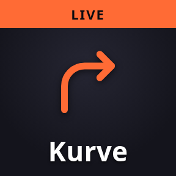
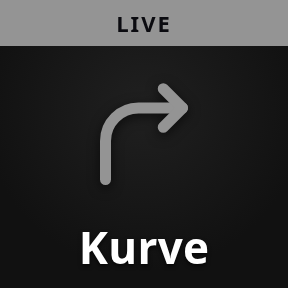
Kurve
Turn Label
Adresse
OBS-Loader
turn.html Größe / Optionen
✓ 260 × 90 (
?names=1 + Kurvenname ≈ 260 × 115)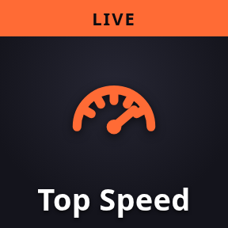
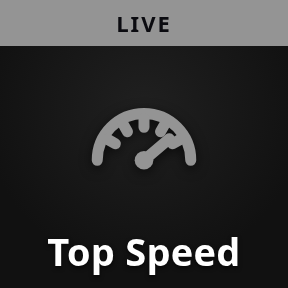
Top Speed
Sector Top Speed
Adresse
OBS-Loader
topspeed.html Größe / Optionen
✓ 456 × 390 (
?top=3 ≈ 456 × 310)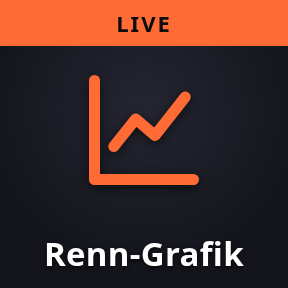
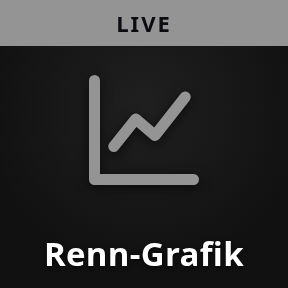
Renn-Grafik
Race Logger Chart
Twitch Chat
Twitch Chat + viewer count
OBS-Loader
twitch_chat.html Größe / Optionen
✓ 420 × 600
YouTube
YouTube picture-in-picture
Adresse
OBS-Loader
keiner - URL-Quelle
http://localhost:5005/youtubeGröße / Optionen
✓ 1280 × 720, Video wählen unter
/youtube/setup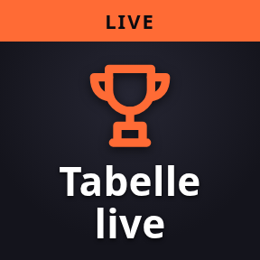
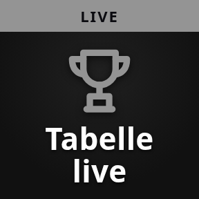
Tabelle live
Championship LIVE / provisional (WCT look)
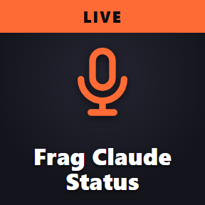
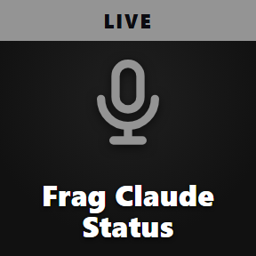
Frag Claude Status
Frag Claude Status
Adresse
OBS-Loader
ask_status.html Größe / Optionen
≈ 520 × 90, unsichtbar wenn nichts läuft (
?text=1 mit Frage + Antwort, ?demo=1), siehe FRAG_CLAUDE.mdZWEIKAMPF
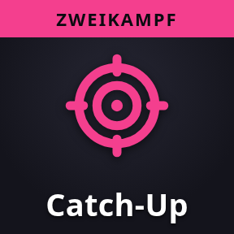
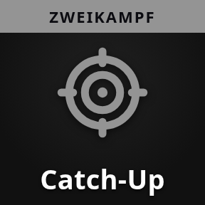
Catch-Up
Catch-Up Battle
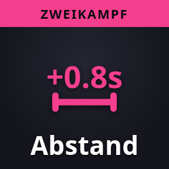
Abstand
Battle: Current Gap
Chasing
Battle: Chasing
Letzte 4 Runden
Battle: Last 4 Laps
QUALIFYING
Delta eigene
Quali Delta (Own Best)
Start Grid
Grid
Adresse
OBS-Loader
grid.html Größe / Optionen
900 × 620 (
?zoom= skaliert; Seiten per Stream Deck 5001/nav/next)Grid Autos
Grid (Cars)
Adresse
OBS-Loader
grid_cars.html Größe / Optionen
900 × 770 (Lackierungen aus iRacing;
?view= Blickwinkel, ?head= / ?accent= Farben; gleiche Seiten-Tasten)Grid Reihe
Grid (Row)
Adresse
OBS-Loader
grid_row.html Größe / Optionen
1000 × 680 (zwei Autos = eine Startreihe auf Asphalt mit Startboxen; Weiter-Taste = nächste Reihe; echte Lackierung von der Seite)
Grid Reihe oben
Grid (Row, top)
Adresse
OBS-Loader
grid_row_top.html Größe / Optionen
1000 × 680 (wie oben, Autos von oben GEZEICHNET in den Hauptfarben der Lackierung — iRacing rendert nur die Seitenansicht)
Beste Sektoren
Best Sectors
Adresse
OBS-Loader
sectors.html Größe / Optionen
✓ 456 × 280 (3 Sektoren; +40 px je weiterem Sektor)
MEISTERSCHAFT
Meisterschaft
Championship
Adresse
OBS-Loader
champ.html Größe / Optionen
✓ 540 × 545 (
?top=0 = alle ≈ 540 × 1530)Titelkampf
Title Fight
Driver of the Day
Driver of the Day
VOR DEM RENNEN
Streckenort
Track Location Map
Letzte Runde
Last Round Results
Adresse
OBS-Loader
lastrace.html Größe / Optionen
✓ 576 × 600 (+27 px je Fahrer über 20)
Tabelle
Standings Before Round
Letzte Runde PRO
Last Round Results PRO
Letzte Runde AM
Last Round Results AM
Tabelle PRO
Standings Before Round PRO
Tabelle AM
Standings Before Round AM
Statistik
Season Statistics
DotD letzte Runde
Last Round Driver of the Day
Letzte Runde neu
Last Round (WCT look)
Tabelle neu
Championship (WCT look)
Teamwertung
Team Standings (WCT look)
NACH DEM RENNEN
Ergebnis Lite
Results Lite
Ergebnis Abspann
Results (Abspann, opaque)
Ergebnis neu
Results (WCT look)
Meisterschaft Abspann
Championship (Abspann, opaque)
Adresse
OBS-Loader
champ_solid.html Größe / Optionen
✓ 1920 × 1080 (
?zoom=)Highlight Titel
Highlight Title Card
Adresse
OBS-Loader
highlight_card.html Größe / Optionen
≈ 1100 × 110 (
?zoom=)BEDIENUNG
Dashboard
Dashboard
Adresse
OBS-Loader
dashboard.html Größe / Optionen
dashboard.html existiert, ist aber deine Regie-Oberfläche, ≈ 1920 × 1080Race Logger
Race Logger
Adresse
OBS-Loader
logger.html Größe / Optionen
logger.html existiert, BedienseiteCorner Cues
Corner Cues
Adresse
OBS-Loader
line.html Größe / Optionen
line.html existiert; gedacht als Fahrhilfe (driving_line_window.py), ≈ 460 × 200BEDIENSEITEN (NICHT FÜR DEN STREAM)
| Dashboard (Kameras, Replays, Vorfälle) | http://localhost:5000 | dashboard.html existiert, ist aber deine Regie-Oberfläche, ≈ 1920 × 1080 |
| Überhol-Fenster (nur die Überholungen, klein) | http://localhost:5000/overtakes/panel | Dashboard muss laufen, seine Seite nicht offen sein. Replay 10 s / 20 s, Kamera, Auto-Replay, Go Live; ab ≈ 340 px breit. ⛶ oder Taste F = Vollbild, ?zoom=1.5 = größer |
| Kamera-Fenster (nur die Kameras, klein) | http://localhost:5000/cameras/panel | Dashboard muss laufen. Jede Kameragruppe der geladenen Strecke als Taste (Custom Cams: Turn 1, Drone T1 …), aktive cyan; Chase / Cockpit / Scenic grau (REGIE nimmt sie nie). Fahrer ◀ ▶, Go Live; ein Klick pausiert die REGIE ~20 s. ⛶ oder Taste F = Vollbild, ?zoom=1.5 = größer |
| Fahrer-Fenster (nur die Fahrerliste, klein) | http://localhost:5000/drivers/panel | Dashboard muss laufen. Live-Reihenfolge, Kamerafahrer cyan, Klick = Kamera auf den Fahrer (REGIE pausiert ~20 s); ☆ merkt Fahrer (dieselben ★ wie im Dashboard), „★ nur“ filtert, Auto-Follow, Go Live. ⛶ / F, ?zoom= |
| Incident-Fenster (nur die Zwischenfälle, klein) | http://localhost:5000/incidents/panel | Dashboard muss laufen. Dreher, Kollisionen, Off-Tracks (grau); Replay 10 s / 20 s, Kamera, ✕, Alle löschen, Auto-Replay, Go Live. ⛶ / F, ?zoom= |
| Race Logger Monitor | http://localhost:5009 | logger.html existiert, Bedienseite |
| Meisterschaft – Liga/Saison wählen | http://localhost:5010/ | Konfiguration |
| YouTube – Video wählen | http://localhost:5005/youtube/setup | Konfiguration |
| Race Control (Stewards) | http://localhost:8080 | im Browser öffnen, kein OBS |
| Corner Cues (Kurvenhinweise beim Selberfahren) | 5012 | line.html existiert; gedacht als Fahrhilfe (driving_line_window.py), ≈ 460 × 200 |